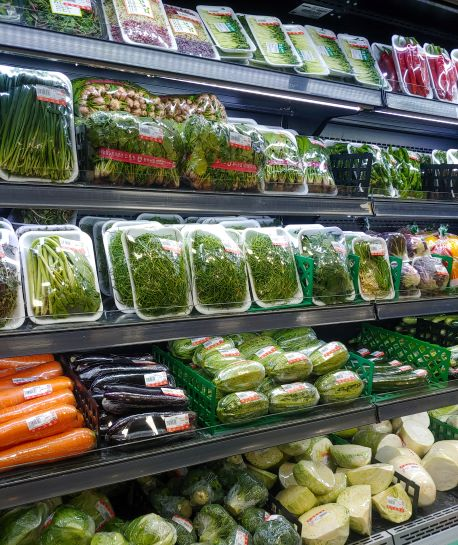
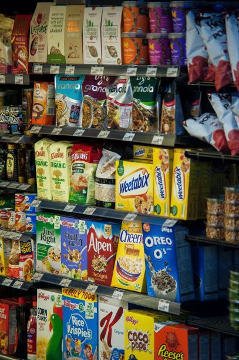

Vegetables are parts of plants that are consumed by humans or other animals as food.It may exclude foods derived from some plants that are fruits, flowers, nuts, and cereal grains, but include savoury fruits such as tomatoes and courgettes, flowers such as broccoli, and seeds such as pulses.At Philadelphia we cater for all your veggie needs.

Cereals are seeds/grains of grasses and are cultivated in order to obtain the largest bounty of their fruit (seed) which consists of germ, endosperm and bran, and is also referred to as the caryopsis. Important cereals are wheat, rice, maize, oat, barley, rye, millet and sorghum.There is a range of cereals to select from at Philadelphia.

A shopping cart (American English) or trolley (British English), also known by a variety of other names, is a wheeled cart supplied by a shop or store, especially supermarkets, for use by customers inside the premises for transport of merchandise as they move around the premises, while shopping, prior to heading to the checkout counter, cashiers or tills.At The Mall we have lots of trolleys/carts to carter for thousands of shoppers at a time.